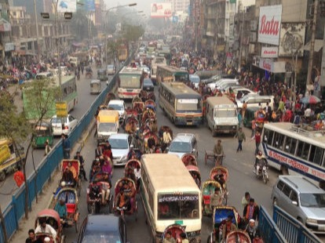

研究 ／ Research
・バングラデシュにおける主な研究

夜間光と社会・経済指標の相関関係
人工衛星で観測される夜間の光の強さが、貧困やインフラ整備などの状況と強く相関していることを確認しました：倉田（2016）

空気汚染が乳幼児の健康に与える影響
大気汚染と室内空気汚染が引き起こす乳幼児の成長阻害には男女差があることを明らかにしました：Kurata, Takahashi & Hibiki (2020)

無電化農村での太陽光発電システムの導入
無電化農村でどのような世帯・店舗が太陽光発電システムを購入しているかについて研究しました：Kurata, Matsui, Ikemoto, Tsuboi (2018)

途上国における理数科の学力格差
小学校における理数科の学力格差は、個人・世帯の特徴だけでなく学校・地域の特徴にも起因することを示しました：倉田・相馬・田中（2018）